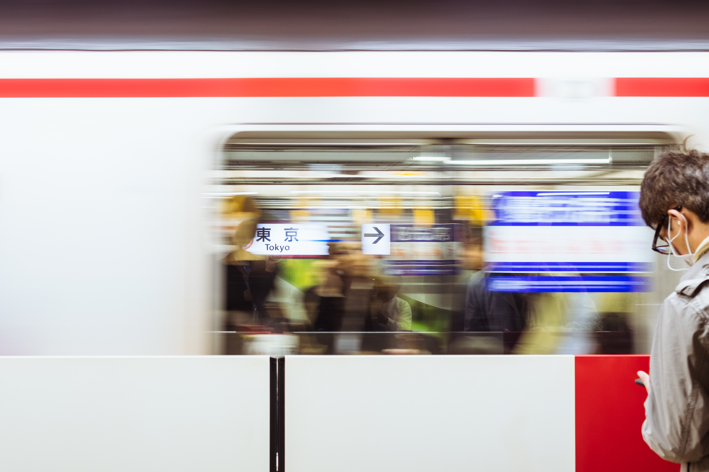

Some background to begin with Japan is that while it is much better than before, it is very much still a cash-based economy.
Cards are generally only used in major cities and within stores, public transportation and some other public/private sectors only accept domestic cards.

The following data is from Japan's 2015 Census:
- Population Census: 127,094,745
- Population Density: 874 people per square mile
- Currency: Japanese Yen
- Last Train/Bus Running in Tokyo: 1 AM JST
The above is not a typo, contrary to belief, public transport in Japan is NOT 24 hours, and most establishments generally close even earlier at around midnight at the latest barring 24/7 convenience stores.

So, just keep in mind the following:
- Have cash handy (and coins).
- Always plan on getting back to where you're staying before 10 PM JST. Just in case.
- It's always going to be crowded, especially popular areas.
- Have a mobile phone that works on Japan's network if you are planning on getting a Data-Only SIM card.
- Wi-Fi rentals to foreigners have to be set up in advance prior to getting into Japan.
- Ditto as above for what's called a "JR Pass", this is "all you can ride on JR owned lines" for free or for discounted prices on bullet trains.
- Always carry ID, passport will do.
- Local places have their own subtle mannerisms. Study the other Japanese people and follow and (generally) you're be fine.
